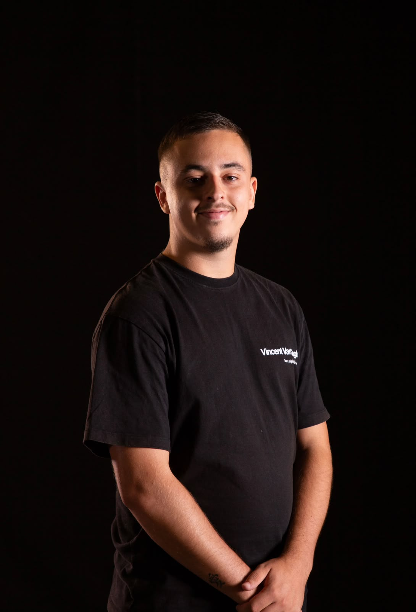

Salut, moi c'est Timeo.
Développeur web freelance sur la Côte d'Azur. J'aide les TPE et les indépendants à avoir un site qui leur ressemble — et qui leur ramène des clients.

Mon approche
Je suis parti d'un constat simple : trop de TPE paient cher un site générique, livré par une agence qu'elles ne joignent plus jamais ensuite. Moi, vous me parlez en direct, du premier message jusqu'à la mise en ligne.
Un site, ce n'est pas qu'une jolie vitrine. C'est un outil qui doit travailler pour vous : être trouvé sur Google, inspirer confiance, et donner envie de vous contacter. C'est exactement ce que je construis.
Pourquoi la double compétence change tout
Je ne fais pas que coder. Je pense aussi marketing : à qui on s'adresse, quel message, quel parcours pour transformer un visiteur en client. Beaucoup de développeurs livrent un beau site qui ne convertit pas. Beaucoup de marketeux ne savent pas le construire. Moi, je fais les deux.